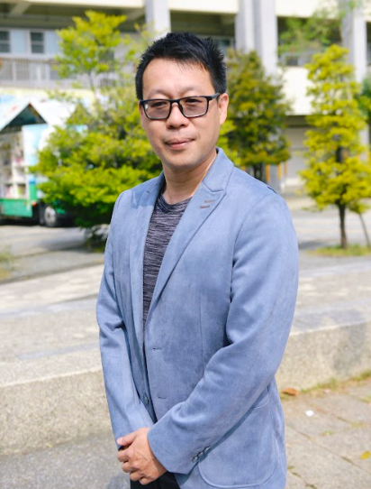

M
Moral
正確價值態度
A doctor of education who came home to a school by the sea. 一位帶著教育學博士學養、回到家鄉沿海小校服務的校長。

A Changhua native who returned to the coast he comes from. Principal Lin holds a doctorate in education, and has served as a county curriculum supervisor, an elementary academic-affairs director, and a homeroom teacher before stewarding this small village school in Fangyuan.
土生土長的彰化囡仔，帶著教育學博士的學養回到家鄉沿海。林彥志校長曾任縣府課程督學、國小教務主任與級任導師，如今守護著芳苑鄉後寮這所偏鄉小校。
Principal Lin's path runs from the classrooms of central Taiwan to the education office of Changhua County, and back to the field where it began — the elementary school. 林彥志校長的養成，從臺中的師範教室、嘉義的研究所，一路走到彰化縣政府教育處，最後又回到他最初出發的場域——國小校園。
Principal Lin believes education is the key to transforming the future. With students at the centre, the school empowers each child through the living water of learning, drawing out their growth across every domain, and commits to cultivating the core competencies he calls the MAGIC "superpowers." 彥志校長堅信教育是翻轉未來的關鍵。以學生為核心，透過教育活水賦能，啟發孩子在不同領域的發展，並致力於培養具備 MAGIC 超能力的核心素養。
Beyond the framework of competencies, four short phrases set the tone of daily life at Houliao — the words the principal returns to at every morning assembly and prize-giving. 在素養框架之外，這四項是後寮國小公開揭示的學校願景，也是校長在每一次升旗、頒獎、運動會上重複向孩子說的話。
「做一個知福惜福的人，懂得獲得後再去幫助別人；做一個能夠被人感恩的人。」
「鼓勵孩子在各方面的創新，確保高度學習的活力。」
「樂觀如明燈，照亮希望的前程；樂觀進取，才能迎向喜悅的人生。」
「因應學童的個性與天分發展，協助每個孩子發揮潛能、尋得專長。」